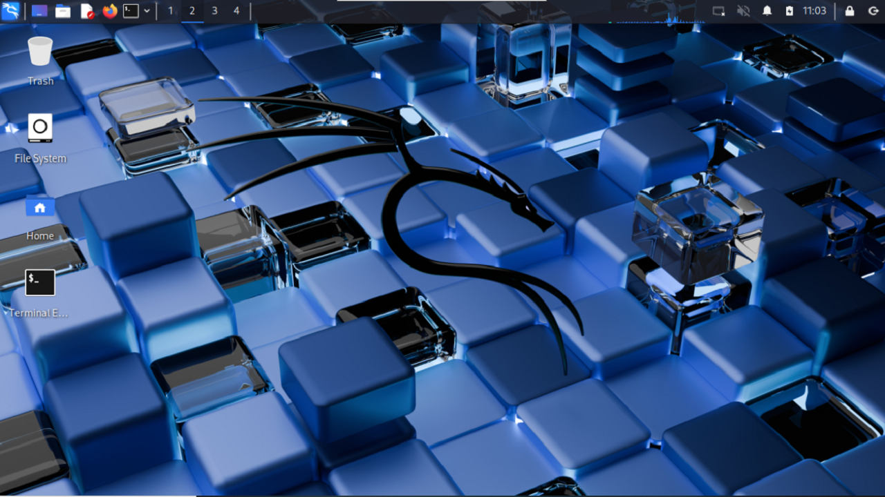
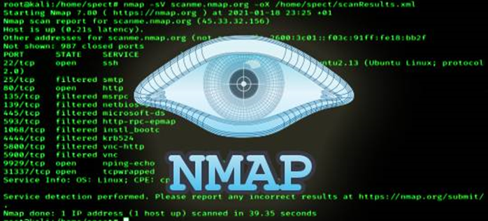
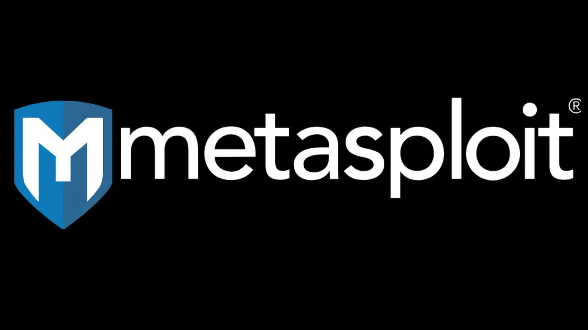

kiber təhlükəsizlikdə hücum və qoruma üçün bir çox yol var məsəslən: hər hansı bir proqramlama dilində tool və ya hücum, qoruma alətləri yazmaqdır bu proqramlama dillərindən ən geniş yayılmışı və demek olar hər yerde istifadə olunan c++ dır belə geniş yayılma səbəbi isə bu proqramlama dili ilə kompüterin daxilinə bele müraciət etmək olur amma bu sahədə işləri asandlaşdırmaq vaxt qənaeti üçün hərkəs hazır tool istifadə etməyə başladı və hazır tool üçün ən geniş yayımış məkan linux əməliyyat sisteminin bir şaxəsi olan Kali linuxdur
əlavə olaraq AI'ın inkişaf etdiyi dövrdə əlbəttəki tool hazırlamaq bir sözlə sıfırdan nəyisə yaratmaq mənasızlaşır amma AI nə qədərdə mükəmməl sistem yarada bilsədə əsas məsələ o yaradılan sistemin daxili şəbəkəsini hiss edib anlamaqdır və bu düşüncə tərzi real hacker ve Script kiddie arasında fərqdir
script kiddie: kod məntiqini anlamayan hazlr kodlardan istifadə edənlərdir.
kiber dünyanın "isveçrə bıçağı"-Kali linux bu əməliyyat sisteminin belə adlanma səbəbi qurulduqdan sonra daxilində 600+ tool(alət) ilə birlikdə gəlir bu alətlər blue team və red teamda geniş istifadə olunur ən məhşur " Alətləri aşağıdakı siyahıda açıqlamasıyla verilib


